本文是对于csapp第二章的一个总结。
作为ee工程师，学习csapp也是受到了23年十月初去博世bcsc面试的刺激，那次面试的最后，博博世的leader问我“你投的真的是软件开发吗？”，我顿时汗流浃背。因为我本科期间一直是以全能手作为我的目标，我在面试的前一段时间一直都在搞我的3D打印机和偏硬件的一些事情，所以c语言的深入学习就被搁置了。
Anyway，虽然拿到了博世的oc，也签了RIgol的三方，我觉得学习是不能够停下来的，在以后的职场上，我觉得做技术的就应该能够拿出自己的看家本事——程序。
csapp的第二章虽然十分的基础，但是我还是受益良多。
在开始之前，我想你已经略微接触了c语言的基础数据类型，让我们开始吧！
Key point
首先，我想强调的一个关键的思想是——阿贝尔群。
阿贝尔群指的：在计算机中，即使是最大最大的和最小最小的数字也是有具体的数值的，而这个数值就是边界，如果超过了这个边界那么就会跳到另一个边界。
这个概念我们之后会一直强调，因为它是一个只存在于计算机里的概念，与我们常规的思想相悖。
Chapter1 数据是怎么存储的？
我们从小到大，就像我们常见的nm、um、mm、cm等等米制单位一样，排列计算机中存储的单元。常见的有：
bit（比特）——Byte（字节）——Word（字）
我们这里并没有提到像Mb、Gb等概念，是因为我们需要从机器的硬件以及底层结构上去理解每一条指令在cpu中是如何去表示去运行的。
这三个单元中最容易被忽视的就是word，字！
在cpu运行程序的时候，是通过总线来进行通信的，如下图所示：
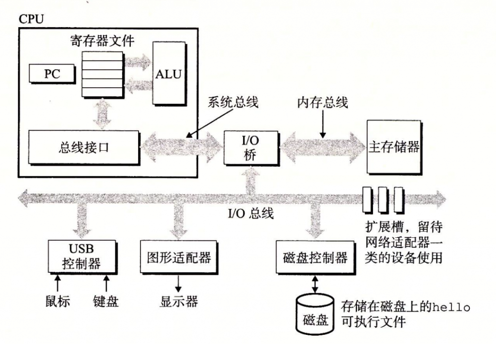
而计算机在总线上丢的数据就是一个字的大小，如果是32位计算机就是32个bit（4个字节或者1个字），如果是64位计算机就是64bit（8个字节或者1个字）。你可以轻而易举地发现，比特和字节这两个单元的大小是不变的，但是字与它们的等价关系是由计算机的位数决定的。
在计算机中，数据是以下图的形式以一个超级大的字节数组来存储的。
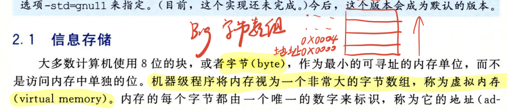
我们想要去访问这个数据的时候可以通过“指针”——一个非常重要的概念，去访问这个超级大的字节数组中的一个数据，就像是我们有一个地址簿，只要查到我们想拜访的朋友的家庭住址就可以找到他。当然，我们的这个地址簿必须是与这个数据是同种类型的。
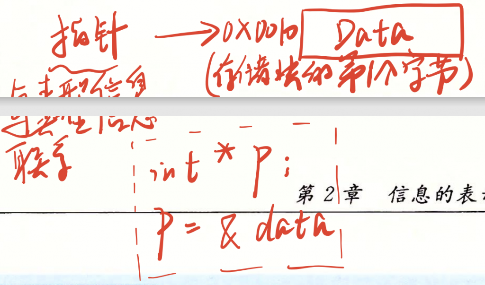
Chapter2 数据的大小？
c语言中常见的数据类型从小到大有：
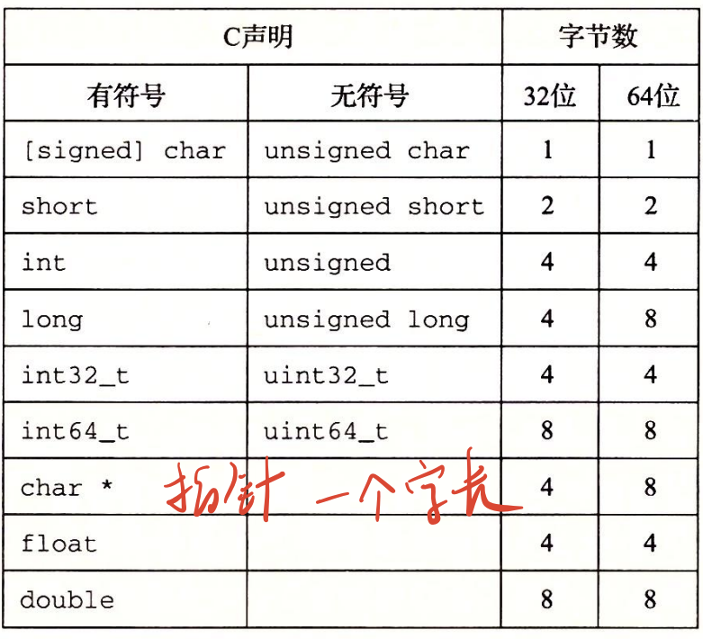
在这里，我浅浅地猜测：在数据类型中最大最大的数据是一个字（word）的大小，是因为在以寄存器的形式去存储的时候，一个寄存器的长度就是一个字，就像是地址簿上的每一行都有最长的长度。
Chapter3 大端与小端
首先我们需要知道程序的数据往往是用二进制存储，但是密密麻麻的二进制数属实让人有些头疼，所以使用十六进制的格式给他们分隔开显得尤为重要。
比如我们用十六进制表示一个jpeg图像，函数如下，将jpeg图像放在同一路径下就能够运行：
```void IOStream(){ FILE* fp = fopen("./logo.jpeg", "r"); if (!fp) { perror("File read failed"); }
int c; //原始的IOStream printf("十六进制数据流：\n"); while ((c = fgetc(fp)) != EOF) { fscanf(fp, "%x", &c); printf("%02x ", c); //如果只使用%x打印的话第二位为0时就会不显示0，如0f只会打印出f。 }
printf("\n"); printf("十进制数据流：\n"); fp = fopen("./logo.jpeg", "r"); //转化为十进制的IOStream while ((c = fgetc(fp)) != EOF) { fscanf(fp, "%x", &c); printf("%d\t", c); //加个tab对齐一下子，优雅。 }
fclose(fp);}```
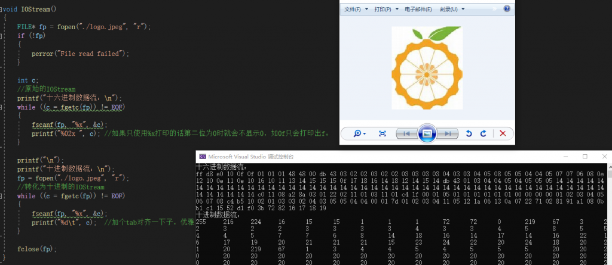
我们能够清晰地看出这个十六进制数是以 FF D8作为起始的，这个就是一个明显的分界线。在存储图像的时候我们每一个像素一般都是由这样的十六进制数所表示的，比如说RGB565，Red和Blue由5bit决定，Green由6bit决定，一共16bit，而正好一个十六进制数由4bit组成，则一个像素可以由四个十六进制数所表示，这就是类似于FF D8或者 E0 10所表示的（虽然FF D8只是数据的头，理解就好）。
大端与小端的分别是很重要的，可能很多同学还没有开发的经历所以没有遇到过酱紫的问题。
我第一次遇到大小端的bug是在开发esp32通过tcp协议传输数据至电脑端，传过来的数据始终不对，在比较双方的数据流格式后我发现每过几个十六进制数据就会出现颠倒的现象。
继续说到FF D8，我们所想表达的意思是这是一个jpeg的数据头，如果以大端形式存储就是FF D8，如果是小端模式存储就是D8 FF。用我们口头语的表示
“你好 世界”：
大端模式：你好 世界
小端模式：好你 界世
可以明显地看出小端模式并不是说把“你好 世界”全部颠倒过来变成“界世好你”，而是分块颠倒。
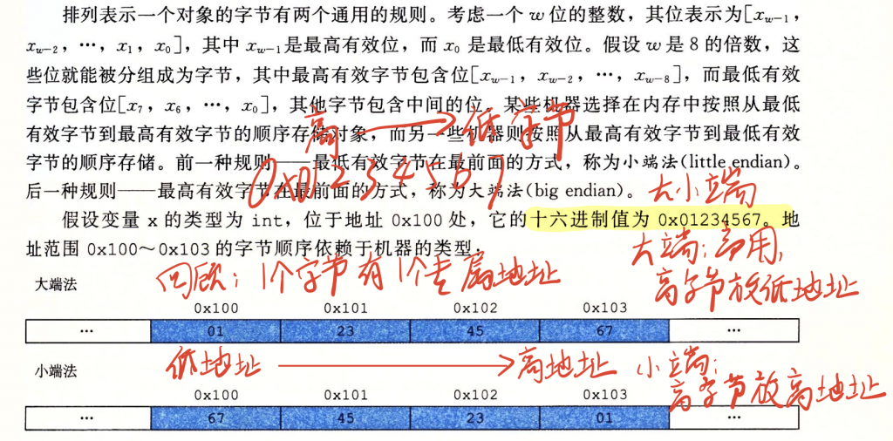
到这个时候你应该已经理解了大小端顺序的概念，你会发现同样的意思为什么非要有两种表示方式呢，这就像为什么有汉语也有英语一样，没有统一罢了。
我们使用大小端主要需要注意以下三种情况：
传输数据、加减运算、使用类型强转和Union联合体
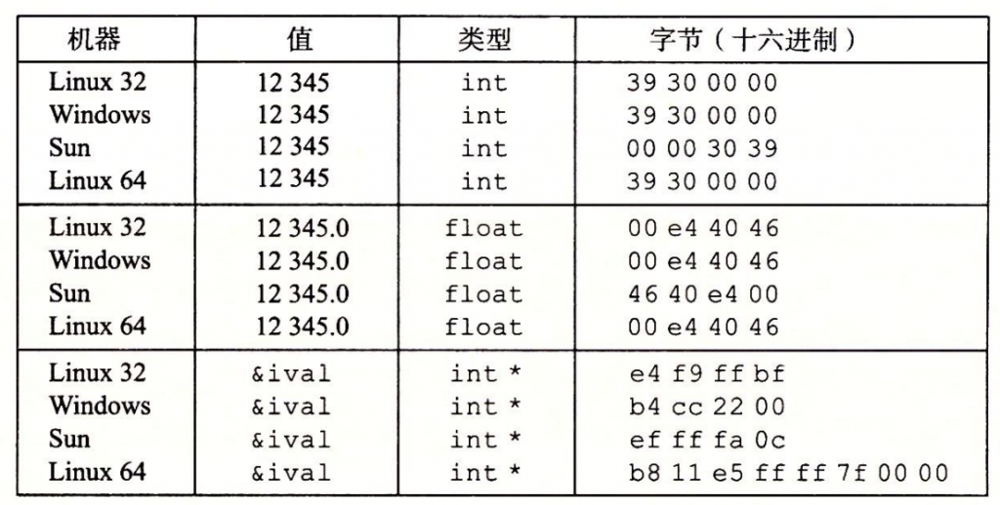
Chapter4 同或与异或
与或非我们就不再赘述，我想着重回顾一下同或与异或这两个概念，我们需要了解这两个运算的本质是什么。我们可以用数字电路的思想去理解。
同或（注意：以下笔记中的同或符号错误，同或的符号是⊙，异或的符号可以用^或者⊕表示）：
异或：
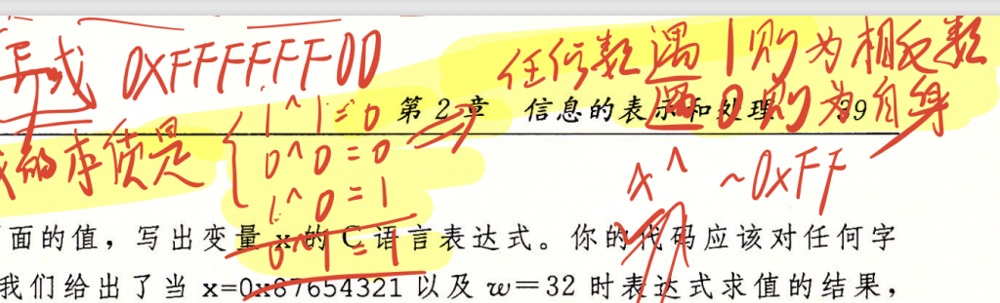
注意，同或和异或是可以化简得，在一定程度上可以减轻代码的开销，比如下题：
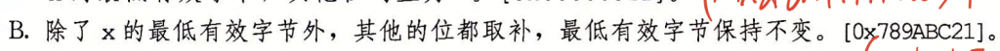
答案可以化简为：只需要x异或低两位为0的非即可，用到的就是异或运算——任何数遇到1则为相反数，遇到0则不变。
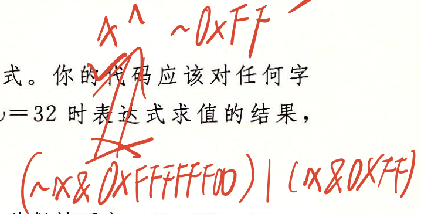
Chapter5 逻辑运算的思维方式
在逻辑运算中我认为可以与数字电路中的真值表联系起来，任何一种数据运算的表示方式都可以穷举然后用一道式子表示出来，比如：
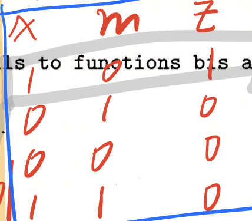
其中x和m是变量，z是结果，那么用特殊的思维方式，我们可以这样理解：
首先我们将“非”的有无作为判0和判1的标准，如果有“~”那么就当作0，无“~”则当作1，那么我们就可以用这种形式代表所有的可能性，比如上图的第一行，
x为1就是x，m为0就是~m，结果是z为1；
x为0就是~x，m为1就是m，结果是z为1；等等
那么我们想用一行式子表示出所有的可能性，那么我们把所有的z为1的可能性写出来，比如可能性一就是x为1就是x，m为0就是~m，结果是z为1，表示出来就是：
x&~m
因为上例只有一种z为1的可能性，所式子就是x&~m。
假设多一种可能性x为0就是~x，m为0就是~m，结果是z为1，那么结果就是所有可能性的或集：
（x&~m）|（~x&~m）
Chapter6 算数右移和逻辑右移
我们对参数进行操作，左移只有一种，低位补0；但是由于存在着无符号数和有符号数的区别（最高位可能是符号位），所以右移分为算术右移和逻辑右移。
算术右移，观其名“算数”，说明是需要区分正负号的，如果是负数符号位为1，则高位需要补1，反之正数则补0。而逻辑右移并不需要区分，所以高位直接补0即可。下例就用到了这个特性：
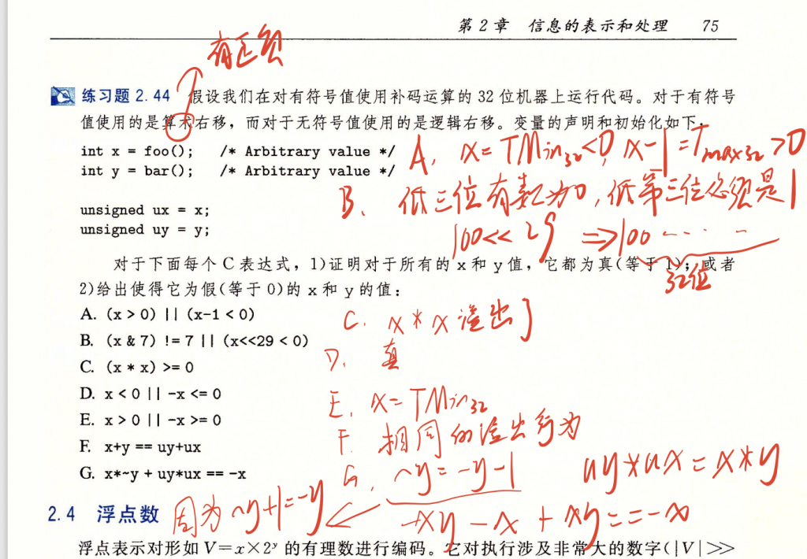
我们注意2.44练习的B题，这便用到了左移的性质：（x&7)!=7意味着x与上二进制111不等于111，所以x的低三位必然存在0；后面（x<<29 < 0）代表着将x左移29位，此时x原先的最低位（x2 x1 x0）中的x2，即低第三位就必须为1，这样x2右移到最高位（x31）时就会成为符号位，从而使x的值为负数。
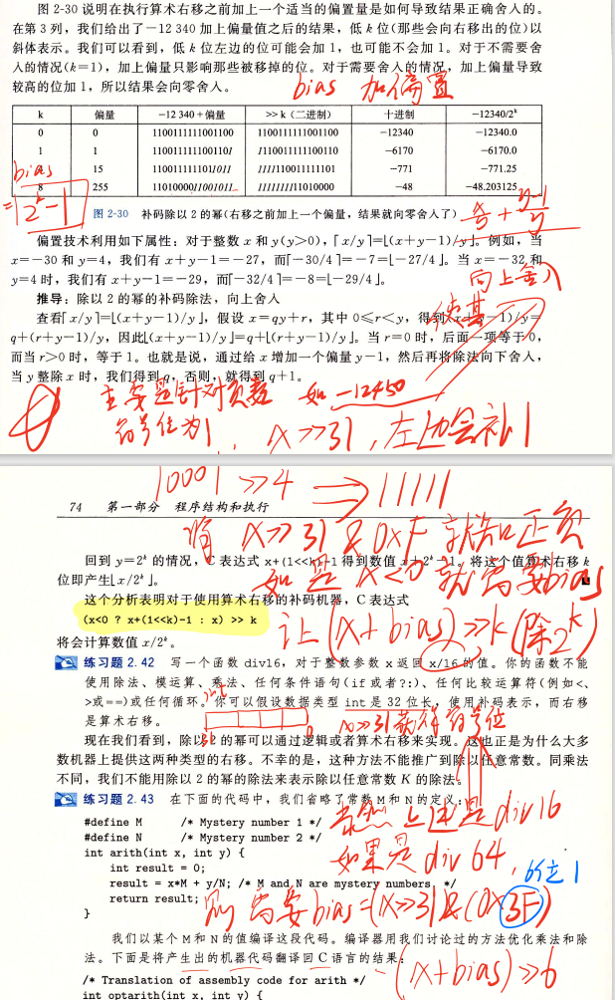
我们提前将除法介绍给大家，将在后面具体讲述除法的本质，其实与右移十分相关。简单来说，对于二进制数而言，右移就是除法。
在本题中，我们需要对除数进行正负号的区分，因为正数除法使用右移会导致向上溢出，但是向上溢出是非常好的，因为我们会抹掉后面溢出的小数；但是负数除法会导致向下溢出，这就难办了，因为向下溢出后我们获得数字的绝对值就会变小，比如-772变成-771.25：
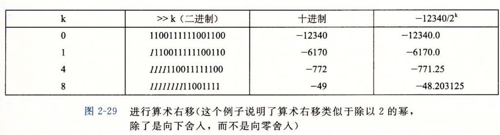
所以我们需要给负数加上偏置（bias，一个特殊的数字）之后再进行右移。
这个偏置的二进制长度等于右移位数，比如右移6位（除以2的6次方，即除以64），则偏置为111111（6个1）。
我们如何判断这个数是不是负数呢，只需要将符号位右移到最后一位，比如
有符号负数10001算数右移4位后得到11111，符号位1填充了所有的位，
有符号正数01110算术右移4位后得到00000，符号位0填充了所有的位，
这样我们再将这个右移后的数&上00011，在判断最后结果是不是00011就可以判断正负数了。
上面提到过加上的偏置是右移位数，所以我们只需要算术右移后&上右移的位数就可以得到我们所需要的偏置咯，比如一个32位无符号数x除以64（111111B）
bias = （x >> 31）& ( 0x3F )
如果x是正数bias = 0，如果x是负数bias = 111111。优雅！
Chapter7 整型数据类型
下图是整型数据类型的大小，我的建议是用占比特数去理解，比如最常用的int类型是32位的，最高位是第31位，最低位是第0位。
所以对于无符号的int类型，最小是2的0次方，最大是2的32次方-1；
对于有符号的int类型，最小是-2的31次方，（因为负数是以补码的形式存储的，所以最小值的二进制是1000...省略0...0000），最大是2的31次方-1（0111...省略1...1111）。补码不在赘述。
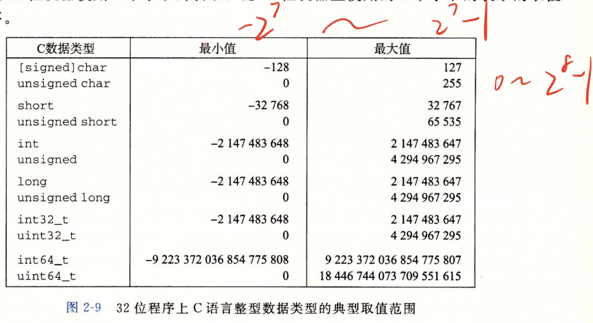
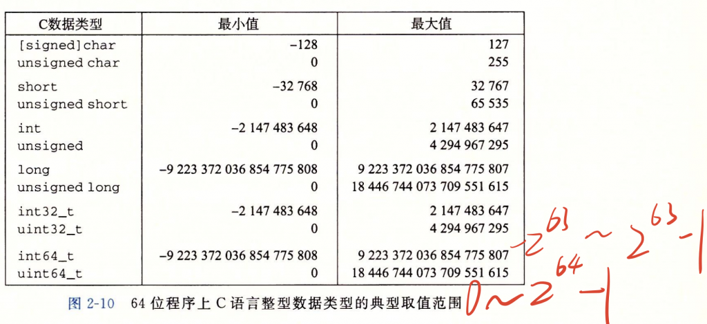
有符号数与无符号数之间的转换以及强制类型转换根本上在于解释最高位的方式，有符号数的最高位代表着数字的正负。
对于补码而言，转换为无符号数就相当于这个数加上2的（位数）次方，比如有符号数-1用补码表示是1111，1111在无符号数中表示是15，即-1 + 2（四次方）=15，究其原因，作为符号位的最高位2的三次方，不仅不再作为-8而存在，而且改邪归正变成了+8，所以在总体上数值+16。可以用每一位都有权重来理解这种思想。下图证明了这种思想。
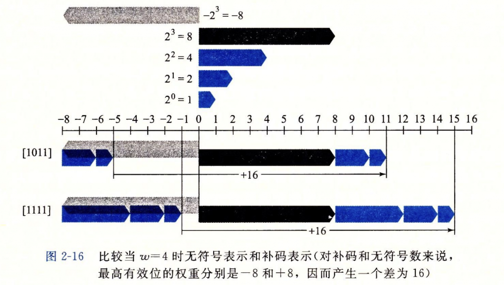
Chapter8 阿贝尔群
这里就要隆重引出abel群的概念，在计算机中并不存在正无穷和负无穷的概念，每一个数据都有它能够表示的范围，最大数+1就是最小数，最小数-1就是最大数。这就是一个循环，一个莫比乌斯环，就像是操场的跑到一样，终点线也是起跑线，理解了这个概念我们就能够理解下面将会介绍的数据之间的基本运算。
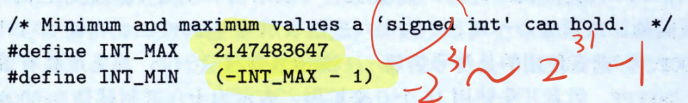
比如在这种情况下，我们的程序就出现了bug，已知size\_t是指unsigned int，当我们在第十六行memcpy的参数len传入一个有符号整型，但是函数定义的时候应该传入的是一个无符号整型，就会将有符号整型强转为无符号；如果hacker故意传入一个负数比如-1，那么强转得到的就是UMax，一个超级无敌大的数，导致程序出现bug：
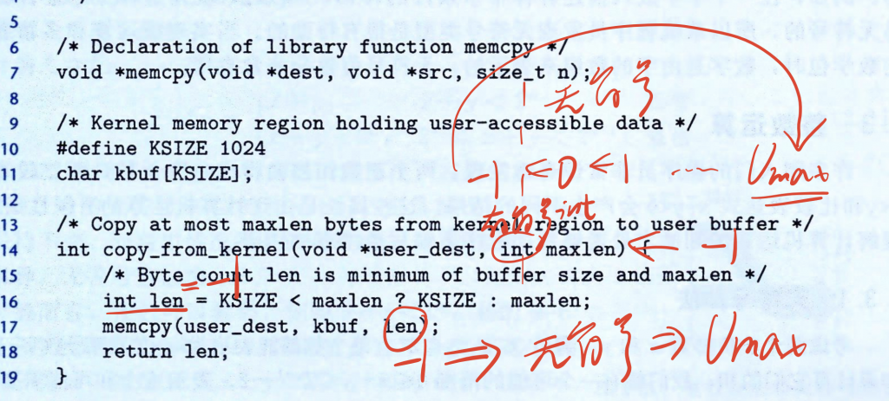
Chapter9 整数运算
整数运算分的种类很多，有符号数无符号数分别有加减乘除，我不一一赘述了，而是对这些运算进行一个总结。
我觉得我们需要明确的是我们所需要得到的结果是什么类型的，比如说两个无符号数运算，必然会出现_溢出_的现象，那么对于溢出我们的处理方法是取模，你所需要知道的一个关键就是我们需要得到的结果的范围，比如一个4位无符号数的二进制范围是0000-1111，十进制范围是0-15，两个这样子的数相加，比如12+12=24，很显然24超过了我们能够表示的十进制的范围（0-15），所以我们进行一个驱魔的操作让这个数落在范围之内：24mod16 --> 8。
取模的根本意义就是——超过范围的数加或者减最大范围（16）的倍数最后落在这个范围内。
1、无符号数加法
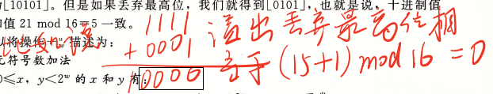
2、判断补码加法是否溢出，如果一正一负必然不会溢出，如果同正或同负且同时两数之和不符合常理地与加数相反，然必然是溢出：
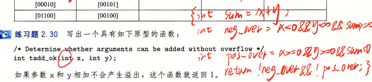
3、_注意！_符号数最小值的相反数是它本身！
比如4位二进制数的最小值是1000（-8），它的相反数是8，但是8又是存在于4位二进制数所能表示的数之外的（-8到7），所以8mod16 -> -8，所以最小值的相反数是它的本身。如下题，当y取无符号数的最小值时会导致本来的x+（-y）的值并不是x加上y的相反数，而是变成了x+y！
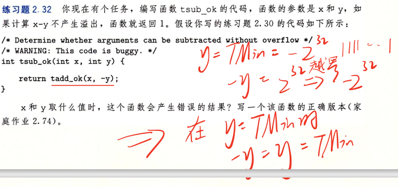
4、无符号数乘法与加法的溢出判断相同，乘法的本质就是二进制左移：
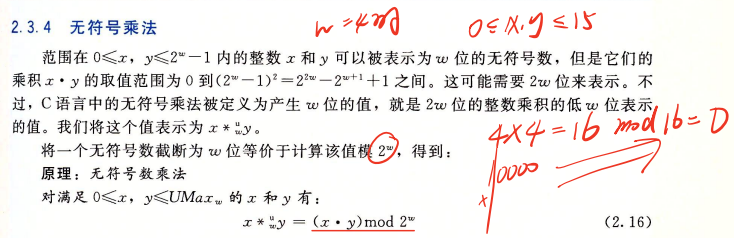
5、补码的乘法同样也不用去记忆复杂的公式，我们只需要知道目标结果能够表示的范围，然后通过取模的方式让结果落在范围里面即可：
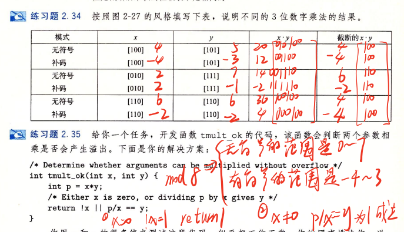
6、乘常数：
对于这种情况编译器有两种方式去进行优化
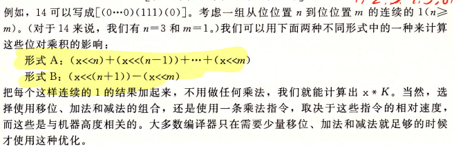
相当于把变量当作拼凑成2的次方项然后进行操作，我们以下表中最后一行，K=55，即x \* 55这个式子的优化：
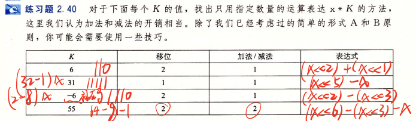
编译器会拼凑 x\*55 成 x\*（64-8-1），这样通过分配律，我们就可以分别对x进行移位（乘法的本质是左移），然后再相加。
7、除法
在Chapter6 算数右移和逻辑右移 中详细讲述过了，不再赘述。
Chapter10 浮点数
这是本章节的最后一部分，我打算另开辟一篇文章来讲浮点数，顺便介绍一个经典的快速平方根算法，一个非常优雅的WTF的算法！